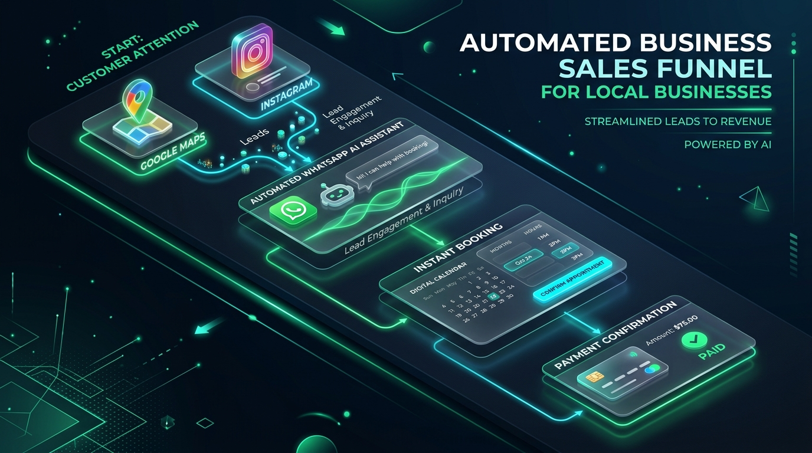
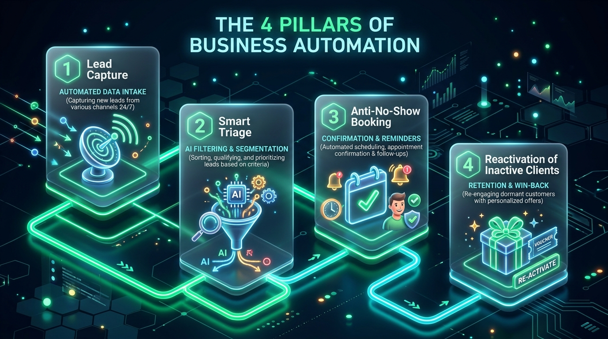
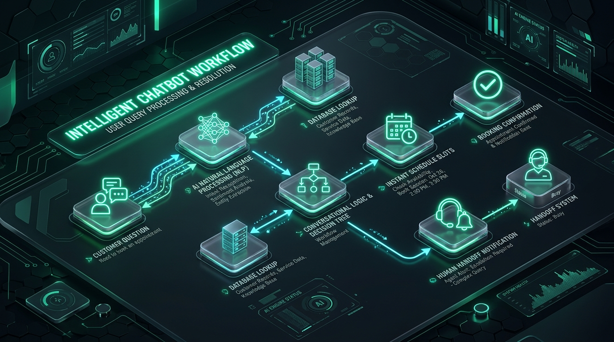
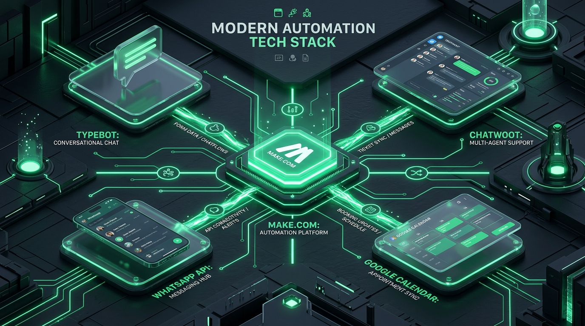
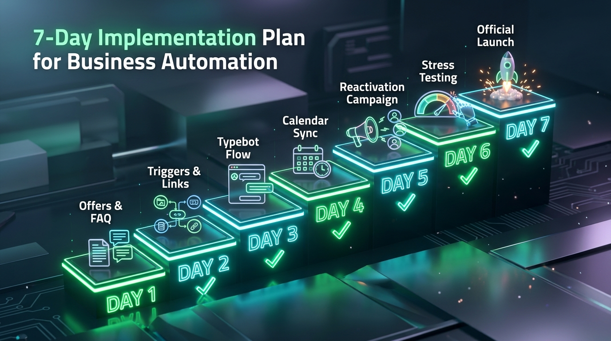

O Guia Definitivo para Criar um Funil de Atendimento, Agendamento e Vendas no Piloto Automático
✍️ Autoria: SVD Lumex & Digital Product Factory📅 1ª Edição Oficial — 2026📍 Estratégia, Tecnologia & Vendas
Dados Internacionais de Catalogação na Publicação (CIP)
SVD Lumex & Digital Product Factory
Esteira de Automação para Negócios Locais: O Guia Definitivo para Criar um Funil de Atendimento, Agendamento e Vendas no Piloto Automático / SVD Lumex. — 1. ed. — São Paulo, SP: Lumex Edições Digitais, 2026.
Formato: Digital (HTML5 / PDF / ePub).
ISBN: 978-65-00-98765-4 (Recurso Eletrônico).
1. Negócios Locais. 2. Automação de Processos. 3. Vendas no WhatsApp. 4. Inteligência Artificial Aplicada. 5. Marketing de Proximidade. I. Título.
Caminhe pela avenida comercial mais movimentada da sua cidade ou abra o Google Maps agora e pesquise por qualquer serviço próximo: uma clínica odontológica, um centro de estética, uma oficina mecânica, uma imobiliária ou um restaurante.
Todas essas empresas têm algo em comum: estão desesperadas por mais clientes.
Muitas delas investem R$ 1.000, R$ 3.000 ou até R$ 10.000 por mês em tráfego pago no Instagram, Facebook ou Google Ads. No entanto, quando você envia uma mensagem no WhatsApp dessas empresas para pedir um orçamento ou agendar um horário às 19h30 de uma terça-feira, o que acontece?
42% dessas empresas não respondem até o dia seguinte;
35% respondem após 4 a 6 horas com uma mensagem fria e burocrática: "Olá, como posso ajudar?" (quando o cliente já fechou com o concorrente);
18% respondem despejando um PDF pesado de 30 páginas ou um texto confuso e ilegível que ninguém lê;
Apenas 5% respondem imediatamente, qualificam o cliente em tempo recorde e colocam o compromisso na agenda em menos de 3 minutos.
💡 A Missão deste Livro
Este material foi escrito para acabar com esse amadorismo. Aqui você aprenderá como construir uma Esteira de Automação Inteligente que atende, qualifica, agenda e recupera clientes de forma humanizada, profissional e automática — gerando lucro previsível todos os dias do ano.
🚀 Introdução: O Paradoxo do Negócio Local e a Torneira Aberta
Imagine um restaurante que possui um vazamento colossal na caixa d'água principal. Em vez de consertar o cano quebrado, o proprietário decide pagar caminhões-pipa todos os dias para continuar enchendo a caixa d'água. Isso parece absurdo? Pois é exatamente o que 95% dos donos de negócios locais fazem todos os meses!
Eles pagam caro para atrair visitantes até o WhatsApp através de anúncios pagos, panfletos ou indicações (o caminhão-pipa), mas deixam a torneira do atendimento aberta: mensagens esquecidas, falta de acompanhamento com quem pediu orçamento e sumiu, e taxas alarmantes de ausência no comparecimento.
⚠️ A Lei dos 5 Minutos (Harvard Business Review & MIT)
Estudos comprovam que responder a um lead comercial em até 5 minutos aumenta as chances de qualificação e fechamento em até 21 vezes se comparado a um atendimento iniciado após 30 minutos. A cada 10 minutos adicionais de espera, o interesse do cliente despenca em mais de 400%.
🔍 Capítulo 1: O Funil Invisível do Comércio Local
Para consertar uma operação, você precisa primeiro enxergar com clareza a jornada do cliente. O funil de um negócio físico ou de serviço de proximidade possui 5 fases fundamentais:

Figura 1.1: A arquitetura do funil automatizado conectando Google Maps, Instagram, WhatsApp com IA e agendamento instantâneo.
Os 3 Maiores Vazamentos de Faturamento
1. O Vácuo da Demora no Primeiro Contato
O cliente clica no anúncio no horário de almoço ou à noite, enquanto descansa no sofá. Ele envia: "Olá, quanto custa o procedimento X?". Se a recepção estiver almoçando ou o expediente tiver encerrado, o lead fica abandonado. Quando o atendente responde horas depois, o cliente já perdeu o momento emocional da compra.
2. A Ilusão do "Vou Ver e Te Aviso"
Quantas vezes sua equipe enviou um orçamento e, após o cliente responder "Obrigado, vou falar com meu esposo e te aviso", a conversa morreu para sempre? Em operações manuais, ninguém tem tempo de abrir 200 conversas passadas para fazer acompanhamento. Mais de 60% das vendas locais são fechadas entre o 2º e o 5º contato, mas 90% das empresas nunca realizam o segundo contato.
3. O Custo Oculto do No-Show (Faltas sem Aviso)
Em clínicas odontológicas, salões e consultórios, uma hora de cadeira vazia é receita perdida para sempre. O custo da estrutura continua correndo. Se uma clínica tem 4 faltas por dia em procedimentos com ticket de R$ 150, são R$ 600 perdidos por dia — totalizando mais de R$ 13.000 jogados no lixo todos os meses.
⚙️ Capítulo 2: Os 4 Pilares da Esteira de Automação

Figura 2.1: Os 4 Pilares da Automação Comercial (Captação, Triagem Inteligente, Agendamento Anti-Falta e Reativação).
Pilar 1: Captação Ativa & Gatilhos Multicanal
A esteira unifica leads vindos do Google Meu Negócio, Instagram Ads, Facebook Ads e QR Codes espalhados na loja física, direcionando todos para um canal centralizado e rastreado no WhatsApp.
Pilar 2: Triagem e Qualificação Inteligente
A esteira realiza de 2 a 3 perguntas rápidas para entender a necessidade real do cliente, segmentando-o automaticamente com etiquetas no CRM (Ex: #PrioridadeAlta, #OrçamentoPendente, #NovoCliente).
Pilar 3: Agendamento Automático e Blindagem Anti-No-Show
Consulta em tempo real a agenda digital e reserva o horário, disparando a sequência de blindagem: confirmação imediata com rota do GPS, lembrete interativo 24 horas antes e lembrete amigo 2 horas antes da consulta. Essa sequência reduz o no-show para menos de 5%.
Pilar 4: Reativação de Clientes Inativos
Monitora o banco de dados e identifica clientes que não retornam há mais de 45 dias, disparando convites personalizados com condições exclusivas e recuperando de 12% a 25% da base adormecida.
💬 Capítulo 3: O Motor da Operação — WhatsApp com IA Humanizada

Figura 3.1: Diagrama da arquitetura de processamento conversacional, consulta de banco de dados e transbordo para atendentes humanos.
O maior receio do empresário é o cliente se sentir mal atendido por um robô mecânico. A esteira resolve isso através de:
Transparência Simpática: Apresenta-se como assistente digital eficiente, focado em agilizar o tempo do cliente;
Perguntas Fechadas: Opções objetivas que evitam respostas ambíguas;
Delays Humanizados: Pausas de digitação naturais (2 a 3 segundos) antes de cada envio;
Transbordo Humano Imediato (Handoff): Se o cliente pedir para falar com uma pessoa, a automação é pausada e a equipe humana recebe uma notificação instantânea no celular.
🛠️ Capítulo 4: A Stack de Ferramentas Recomendadas

Figura 4.1: Arquitetura integrada conectando Make.com, Typebot, Chatwoot, Google Calendar e WhatsApp API.
Para construir uma esteira profissional sem custos astronômicos de desenvolvimento, utilizamos o que há de mais eficiente no mercado no-code e open source:
Ferramenta
Função na Esteira
Custo Estimado
Make.com
Cérebro da integração entre WhatsApp, Planilhas, CRM e Agenda
Grátis (até 1.000 operações/mês) ou US$ 9/mês
Typebot.io
Construtor visual de fluxos conversacionais inteligentes
Plano gratuito ou Self-Hosted Open Source
Chatwoot
Central de atendimento com múltiplos operadores humanos
Gratuito / Open Source
API de WhatsApp
Conector de envio e recebimento de mensagens
API Oficial da Meta ou Gateways (Evolution / Z-API)
Como Conectar as Peças (Passo a Passo)
Instalação do Typebot: Crie um bot de qualificação com blocos de texto curtos, botões de escolha rápida e coleta de nome e telefone.
Integração via Webhook no Make.com: Quando o cliente finaliza o fluxo no Typebot, ele dispara um Webhook para o Make com os dados estruturados.
Gravação no Google Sheets / CRM: O Make adiciona uma nova linha na planilha comercial com data, nome, serviço e etiqueta de prioridade.
Reserva no Google Calendar / Cal.com: O Make consulta horários vagos e cria o evento automaticamente, gerando a confirmação com o link de mapa.
📅 Capítulo 5: O Plano de Ação Prático de 7 Dias

Figura 5.1: O Roadmap de 7 Dias de Implementação Prática, do mapeamento inicial ao lançamento oficial.
Siga rigorosamente este roteiro diário para colocar a sua esteira rodando em produção em apenas uma semana:
Dia 1: Mapeamento de Rotas e Ofertas
Reúna a equipe de recepção e liste as 10 perguntas mais comuns enviadas no WhatsApp. Defina com clareza o preço, formas de parcelamento e a oferta irresistível de entrada para atrair novos clientes.
Dia 2: Criação dos Gatilhos de Entrada
Gere links de WhatsApp com mensagens pré-preenchidas rastreadas (Ex: "Olá, vim do Google Maps e quero agendar"). Atualize o botão de contato do Perfil da Empresa no Google e o link da bio no Instagram.
Dia 3: Construção do Fluxo no Typebot
Desenhe o fluxo com boas-vindas simpáticas, as 3 perguntas de triagem e o roteamento para orçamentos ou horários. Ative delays de digitação de 2 segundos para dar sensação humana.
Dia 4: Conexão com Agenda e Lembretes
Configure o cenário no Make.com para registrar o agendamento no Google Agenda e programar as mensagens de confirmação imediata, lembrete de 24h e lembrete de 2h antes.
Dia 5: Campanha de Reativação da Base Antiga
Exporte sua lista de clientes dos últimos 6 meses. Filtre aqueles que não voltam há mais de 45 dias e prepare o disparo de uma condição exclusiva de retorno.
Dia 6: Testes Controlados e Estresse
Peça para colaboradores e familiares enviarem mensagens simulando dúvidas difíceis, reagendamentos e pedidos de atendente humano. Valide se todos os alertas chegam no celular da equipe.
Dia 7: Lançamento Oficial
Vincule o número principal da empresa à esteira. Acompanhe as conversas em tempo real nas primeiras horas e assista aos primeiros agendamentos sendo realizados no piloto automático!
🏢 Capítulo 6: Playbooks de Implementação por Nicho Específico
Figura 6.1: A esteira de automação aplicada aos principais modelos de negócios locais da sua cidade.
Cada segmento local possui dinâmicas operacionais únicas. Abaixo estão os modelos validados para os principais mercados:
1. Clínicas Médicas, Odontológicas e Estética Avançada
Principal Dor: Pacientes que marcam avaliação e faltam (no-show de 35% a 45%) e esquecimento de manutenções semestrais.
Fluxo da Esteira: Triagem por especialidade ➔ Escolha do dia da semana ➔ Confirmação com lembrete interativo 24h antes com botão de confirmação ➔ Disparo de recall semestral (limpeza dental, retoque de botox, exames preventivos).
2. Salões de Beleza, Barbearias e Spas
Principal Dor: Profissionais ocupados cortando ou lavando cabelo sem conseguir responder o celular durante o dia.
Fluxo da Esteira: Menu com foto dos serviços ➔ Escolha do profissional preferido ➔ Seleção de horário em calendário digital ➔ Lembrete amigável no dia com rota de trânsito.
3. Oficinas Mecânicas e Auto Centers
Principal Dor: Clientes em situação de estresse/urgência que precisam de socorro ou previsão rápida de custo.
Fluxo da Esteira: Menu com 2 opções diretas: [Emergência] ou [Revisão Preventiva] ➔ Coleta rápida de Marca/Modelo/Ano do carro ➔ Envio de estimativa e agendamento com box reservado.
4. Imobiliárias e Corretores de Imóveis
Principal Dor: Leads que entram nos finais de semana e esfriam antes da segunda-feira de manhã.
Fluxo da Esteira: Pergunta qualificadora: Compra vs. Locação ➔ Faixa de valor pretendida ➔ Bairro de interesse ➔ Agendamento automático da visita presencial com o corretor da região.
5. Academias, Studios de Pilates e Lutas
Principal Dor: Leads que pedem preço e somem sem agendar a aula experimental.
Fluxo da Esteira: Apresentação da estrutura em vídeo curto ➔ Oferta de aula experimental gratuita com dia marcado ➔ Lembrete 3h antes com orientações de roupa e chegada.
6. Restaurantes, Cafés e Delivery
Principal Dor: Mensagens acumuladas no horário de pico (almoço e jantar) causando atrasos nos pedidos.
Fluxo da Esteira: Envio imediato do cardápio digital interativo ➔ Atendimento automatizado de reserva de mesas com envio de voucher de cortesia na primeira visita.
🛡️ Capítulo 7: Blindagem de Linha, Aquecimento e Diretrizes Anti-Ban
Figura 7.1: Sistema de blindagem de linha e protocolo de aquecimento de 14 dias para proteção contra banimentos.
O WhatsApp possui filtros algorítmicos rigorosos para proteger os usuários contra spam. Para operar com segurança e estabilidade, siga este protocolo:
O Protocolo de Aquecimento de 14 Dias (Para Novos Números)
Dias 1 a 3: Configure o perfil no WhatsApp Business com logotipo, endereço e horário. Troque mensagens normais com 5 a 10 contatos da sua confiança.
Dias 4 a 7: Participe de grupos de empreendedores locais e interaja normalmente. Mantenha conversas bidirecionais (onde a outra pessoa responde).
Dias 8 a 11: Inicie o recebimento de mensagens de clientes vindos de anúncios ou do Google Meu Negócio (tráfego receptivo não gera risco de ban).
Dias 12 a 14: Comece disparos de reativação em lotes pequenos (máximo de 20 por hora, com intervalos de 20 a 40 segundos entre cada envio).
⚠️ Regra de Ouro da Meta & LGPD
Sempre inclua ao final de qualquer mensagem de reativação ou promocional uma cláusula de saída simples: "Caso não queira mais receber nossos lembretes, basta responder SAIR a qualquer momento." Isso zera o risco de o cliente clicar no botão de "Denunciar como Spam".
🎁 Capítulo 8: O Grande Pack com 25 Scripts Prontos na Íntegra
Figura 8.1: A central de scripts testados e validados para conduzir o cliente do primeiro contato até o fechamento.
Abaixo estão os 25 scripts de alta conversão, sem abreviações, prontos para copiar e colar na sua esteira de atendimento:
Bloco A: Boas-Vindas e Acolhimento Imediato (5 Scripts)
Script 01 • Boas-Vindas Geral / Prestação de Serviços
Olá, {{primeiro_nome}}! Que alegria ter você por aqui. Seja muito bem-vindo(a) à {{nome_da_empresa}}! 😊
Eu sou o assistente digital da nossa equipe e estou aqui para agilizar seu atendimento em segundos.
Para que eu possa te direcionar para a pessoa certa da equipe, me conte: qual destes assuntos você gostaria de resolver hoje?
1️⃣ Conhecer nossos serviços e tabela de valores
2️⃣ Agendar um horário para esta semana
3️⃣ Tirar dúvidas sobre um orçamento em andamento
4️⃣ Falar diretamente com um atendente humano
Basta digitar o número da opção desejada! 👇
Script 02 • Clínicas de Saúde, Odontologia e Estética
Olá, {{primeiro_nome}}! Bem-vindo(a) à {{nome_da_empresa}}. 🩺✨
Meu nome é Lucca, assistente virtual da clínica. Nosso foco é cuidar do seu bem-estar com o máximo de agilidade e carinho.
Você já é paciente da nossa clínica ou esta será a sua primeira consulta com a gente?
[A] Sou paciente cadastrado
[B] É a minha primeira vez
(Pode responder apenas com a letra A ou B!)
Script 03 • Restaurantes, Bares e Delivery
Opa, {{primeiro_nome}}! Bateu aquela fome boa por aí? 🍔🍕
Você está no canal oficial de atendimento da {{nome_da_empresa}}. Como podemos fazer o seu dia mais gostoso hoje?
1️⃣ Ver o cardápio completo com fotos e preços
2️⃣ Fazer um pedido para entrega rápida
3️⃣ Reservar uma mesa para hoje à noite
4️⃣ Falar com a nossa recepção
Digite o número da sua escolha:
Script 04 • Automotivo / Oficinas e Auto Centers
Olá! Bem-vindo à {{nome_da_empresa}}, seu centro automotivo de confiança aqui em {{cidade}}. 🚗🔧
Para te atendermos com a rapidez que seu carro precisa: você está passando por alguma emergência neste momento ou deseja agendar uma revisão preventiva?
1️⃣ Emergência (carro quebrado / pneu / socorro)
2️⃣ Revisão preventiva / Troca de óleo
3️⃣ Orçamento de peças e serviços
4️⃣ Falar com o chefe de oficina
Script 05 • Imobiliárias e Corretores
Olá, {{primeiro_nome}}! Agradecemos seu contato com a {{nome_da_empresa}}. 🏡✨
Encontrar o imóvel perfeito para morar ou investir é um momento especial. Para te apresentar as opções certas hoje:
Qual o seu objetivo principal?
1️⃣ Comprar um imóvel residencial
2️⃣ Alugar um imóvel
3️⃣ Colocar meu imóvel para vender ou alugar
4️⃣ Falar sobre um anúncio específico que vi no portal
Bloco B: Envio de Orçamentos e Quebra de Objeções (5 Scripts)
Script 06 • Orçamento com Ancoragem e Bônus Rápido
{{primeiro_nome}}, preparei a proposta personalizada para o seu caso com todo o cuidado que você merece! 📄✨
O investimento completo para o serviço de {{nome_do_servico}}, incluindo:
✔️ Todos os materiais e garantia integral de 12 meses
✔️ Acompanhamento exclusivo da nossa equipe especializada
✔️ Suporte prioritário pós-atendimento
Fica em apenas {{valor_parcelado}} em até {{numero_parcelas}}x sem juros (ou {{valor_a_vista}} com desconto especial no Pix).
🎁 Condição especial: confirmando o fechamento até hoje às 18h, nós incluímos o bônus de {{nome_do_bonus}} totalmente de cortesia para você.
Podemos reservar a sua vaga para darmos início?
Script 07 • Follow-up de Orçamento (Após 2 Horas sem Resposta)
Oi, {{primeiro_nome}}! Tudo bem? Vi que você visualizou nossa proposta há pouco.
Ficou alguma dúvida sobre o que está incluso no pacote ou sobre as formas de pagamento?
Estou à disposição para ajustar o que for necessário para viabilizar o seu projeto hoje! 😊
Script 08 • Quebra de Objeção de Preço ("Achei Caro")
Eu entendo perfeitamente a sua preocupação com o orçamento, {{primeiro_nome}}!
O mercado realmente tem opções com preços variados. Mas o nosso diferencial é que não abrimos mão de {{diferencial_qualidade_ou_garantia}}, o que evita dores de cabeça futuras e retrabalhos que costumam custar o dobro.
O que acha de darmos um primeiro passo com o plano {{nome_plano_de_entrada}}, que atende exatamente o que você precisa agora por apenas {{valor_menor}}?
Script 09 • Follow-up de 24 Horas ("O Cliente Sumiu")
Olá, {{primeiro_nome}}! Passando rapidinho só para te dar um alô.
Ainda estamos com a sua condição especial de {{nome_do_servico}} reservada aqui no sistema, mas os horários da agenda desta semana estão quase esgotados.
Você ainda tem interesse em realizar o atendimento esta semana ou prefere deixar para o próximo mês?
Script 10 • O Fechamento por Escassez Real
{{primeiro_nome}}, um aviso importante: nossa tabela de valores atual será atualizada na próxima segunda-feira devido aos reajustes de fornecedores.
Como conversamos ontem, se você confirmar seu pedido até amanhã às 12h, consigo travar o valor antigo de {{valor_antigo}} para você.
Podemos garantir o seu pedido com esse valor promocional?
Bloco C: Confirmação de Agendamento Anti-Falta (5 Scripts)
Script 11 • Confirmação com Link de GPS
Agendamento Confirmado com Sucesso! 🎉📅
Olá, {{primeiro_nome}}, sua consulta para {{nome_do_procedimento}} está agendada!
🗓️ Data: {{data_agendamento}}
⏰ Horário: {{horario_agendamento}}
📍 Endereço: {{endereco_completo}}
🗺️ Link de rota fácil (Google Maps / Waze): {{link_mapa}}
💡 Dica: Temos estacionamento gratuito no local. Recomendamos chegar com 10 minutinhos de antecedência para tomar um café com a gente. Até breve!
Script 12 • Lembrete 24 Horas Antes com Confirmação Interativa
Olá, {{primeiro_nome}}! Tudo bem? Passando para lembrar do seu compromisso amanhã na {{nome_da_empresa}}! ⏰
🗓️ Amanhã, {{data_amanha}}, às {{horario_agendamento}}.
Especialista responsável: {{nome_do_profissional}}.
Para mantermos a sua sala reservada e nossa equipe pronta para te receber, por favor, clique em uma das opções abaixo:
1️⃣ Sim, confirmo minha presença amanhã!
2️⃣ Preciso remarcar para outro dia/horário.
Aguardamos sua resposta! 🙏
Script 13 • Lembrete de 2 Horas Antes (Dia do Atendimento)
Opa, {{primeiro_nome}}! Daqui a pouco é a sua vez! 🚗💨
Nossa equipe já está deixando tudo preparado para o seu atendimento às {{horario_agendamento}}.
Se precisar de qualquer ajuda com a localização ou rota, estamos à disposição por aqui. Tenha um excelente caminho até aqui!
Script 14 • Reagendamento Amigável (Quando o Cliente Avisa que Vai Faltar)
Sem problemas, {{primeiro_nome}}! Imprevistos acontecem e nós entendemos perfeitamente. Muito obrigado por nos avisar com antecedência! 🙏
Para não deixar seu cuidado para depois, já tenho duas opções livres na agenda:
Opção 1: {{dia_1}} às {{horario_1}}
Opção 2: {{dia_2}} às {{horario_2}}
Qual desses dois horários fica melhor para você?
Script 15 • Recuperação de No-Show (Para Quem Faltou sem Avisar)
Oi, {{primeiro_nome}}! Sentimos sua falta hoje no horário das {{horario_agendamento}}. Esperamos de coração que esteja tudo bem com você e sua família! ❤️
Sabemos que a rotina às vezes é corrida. Quando tiver um tempinho, nos dê um alô por aqui para reagendarmos o seu horário sem nenhum custo ou problema. Um abraço!
Bloco D: Reativação de Clientes Inativos (5 Scripts)
Script 16 • O Gancho da Saudade Sincera (30 a 60 Dias)
Olá, {{primeiro_nome}}! Tudo bem por aí? Faz um tempinho que não vemos você por aqui na {{nome_da_empresa}} e ficamos com saudades! 😊
Como você é um cliente muito especial para nós, liberamos um voucher exclusivo de R$ {{valor_desconto}} para você usar em qualquer serviço ou produto durante esta semana.
Quer que eu envie os horários livres para você aproveitar o seu presente?
Script 17 • O Recall Preventivo (Manutenção Periódica Obrigatória)
Olá, {{primeiro_nome}}! Aqui é da equipe técnica da {{nome_da_empresa}}.
Consultando nosso sistema, vi que já se passaram {{numero_meses}} meses desde o seu último procedimento de {{nome_do_servico}}.
Para garantir que os resultados continuem impecáveis e evitar problemas maiores, o ideal é realizar a revisão preventiva nesta época do ano.
Abrimos 4 vagas prioritárias na agenda desta quinta e sexta para clientes em período de revisão. Podemos agendar o seu retorno?
Script 18 • O Presente de Aniversário
Parabéns pelo seu dia, {{primeiro_nome}}! 🎂🎉🎈
Toda a equipe da {{nome_da_empresa}} deseja um ano repleto de conquistas, saúde e muitas alegrias para você!
E como aniversário bom tem comemoração, preparamos um presente especial: durante todo o mês do seu aniversário, você tem {{porcentagem_desconto}}% de desconto em qualquer serviço nosso, além de um brinde exclusivo na sua visita.
Quando quiser vir comemorar com a gente, basta me chamar aqui para reservar seu momento! 🎁
Script 19 • A Pesquisa de Satisfação com Reativação Oculta
Olá, {{primeiro_nome}}! Tudo bem? Estamos realizando uma rápida melhoria em nossos atendimentos e a sua opinião é fundamental para nós.
De 0 a 10, que nota você daria para a sua última experiência conosco?
Como agradecimento sincero pelo seu tempo, após responder a nota você receberá uma cortesia especial para sua próxima visita. Leva menos de 10 segundos! 👇
Script 20 • Convite VIP para Testar Novo Serviço / Produto
{{primeiro_nome}}, estamos selecionando apenas 10 dos nossos clientes mais fiéis para uma experiência exclusiva de lançamento do nosso novo {{nome_novo_servico}} antes de abrirmos para o público geral.
Como você sempre esteve com a gente, gostaríamos muito de convidar você para experimentar essa novidade com 50% de desconto nesta primeira sessão.
Você tem interesse em fazer parte deste grupo VIP? Responda SIM que te passo os detalhes! ✨
Bloco E: Avaliações 5 Estrelas no Google Meu Negócio (5 Scripts)
Script 21 • Pedido Pós-Atendimento Imediato (Pico Emocional de Satisfação)
Oi, {{primeiro_nome}}! Ficamos imensamente felizes em receber você hoje na {{nome_da_empresa}}! Esperamos que tenha amado a experiência tanto quanto nós amamos te atender. 🥰
Para uma empresa local como a nossa, a recomendação de clientes especiais faz toda a diferença do mundo.
Poderia nos presentear com uma avaliação rápida no Google? Leva apenas 30 segundos e nos ajuda muito a continuar crescendo!
Basta tocar neste link e deixar suas estrelas:
⭐ {{link_google_avaliacoes}}
Muito obrigado pelo carinho e até a próxima visita!
Script 22 • O Sorteio / Benefício por Avaliação
{{primeiro_nome}}, como foi o seu atendimento hoje? Esperamos que tenha sido nota 10! ⭐
Sabia que quem deixa um comentário com foto no nosso Perfil do Google concorre automaticamente a um {{premio_ou_voucher}} no final deste mês?
Para participar do sorteio, é só tocar no link e deixar sua avaliação sincera:
👉 {{link_google_avaliacoes}}
Boa sorte! Torcemos por você! 🍀
Script 23 • Pedido Pessoal do Fundador da Empresa
Olá, {{primeiro_nome}}, aqui é o {{nome_do_fundador}}, fundador da {{nome_da_empresa}}.
Estou passando pessoalmente para agradecer pela confiança em nosso trabalho hoje. Criamos este negócio com o sonho de entregar o melhor atendimento da nossa região.
Se nosso time fez um bom trabalho hoje, você poderia nos ajudar compartilhando sua opinião no Google? Seu feedback pessoal significa muito para mim e para toda a equipe.
Link direto para avaliar: {{link_google_avaliacoes}}
Um grande abraço e conte sempre conosco!
Script 24 • Agradecimento de Indicação com Pedido de Review
{{primeiro_nome}}, vimos que o seu amigo {{nome_amigo_indicado}} veio nos visitar hoje e disse que veio por sua recomendação! Ficamos lisonjeados com a sua confiança em nosso trabalho. ❤️
Você já deixou sua avaliação no nosso Google? Se puder registrar lá o que você acha dos nossos serviços, será um presente maravilhoso para nós:
⭐ {{link_google_avaliacoes}}
Gratidão imensa!
Script 25 • Follow-up Gentil do Pedido de Avaliação
Oi, {{primeiro_nome}}! Sei que a sua rotina é corrida, então estou passando só para te lembrar com todo carinho daquele pedido de avaliação no Google.
Se tiver 1 minutinho livre no seu dia, sua nota nos ajudará demais:
👉 {{link_google_avaliacoes}}
Tenha uma semana extraordinária! ✨
🚀 Conclusão: A Oportunidade de Prestar Serviços na Sua Cidade
Existem mais de 20 milhões de empresas ativas no Brasil. Quase todas sofrem diariamente com demora no atendimento, cancelamentos e falta de tempo para fazer follow-up.
Profissionais que dominam a implementação dessa esteira cobram de R$ 1.500 a R$ 5.000 por setup, além de mensalidades de R$ 500 a R$ 1.500 por empresa. Com apenas 5 clientes fixos, você constrói uma renda previsível de até R$ 10.000 por mês entregando um serviço de alto impacto.
👨💻 Criação & Engenharia Digital
Sobre o Desenvolvedor
Este ecossistema de conteúdo, automações e estratégias digitais foi concebido e estruturado por Diniz — especialista em desenvolvimento de automações comerciais de alta performance, esteiras para WhatsApp e plataformas web modernas.